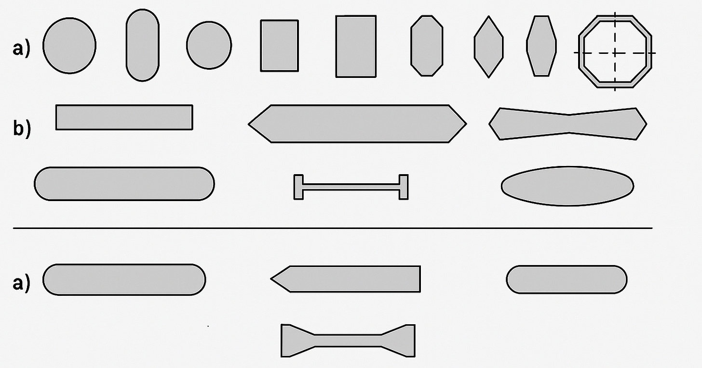
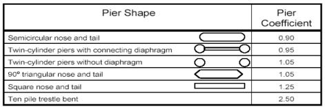
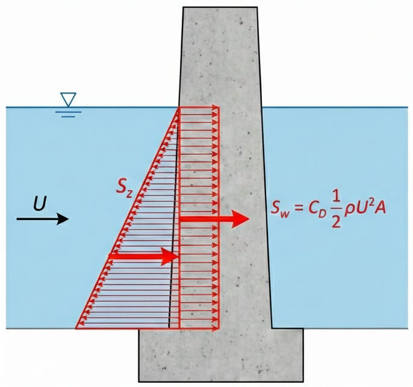
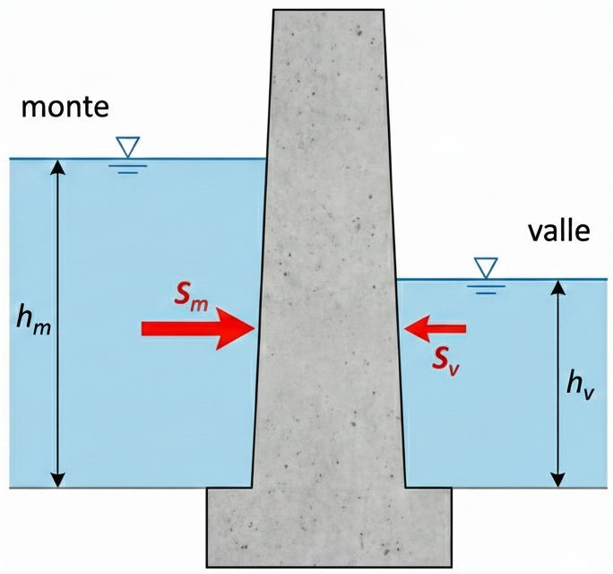
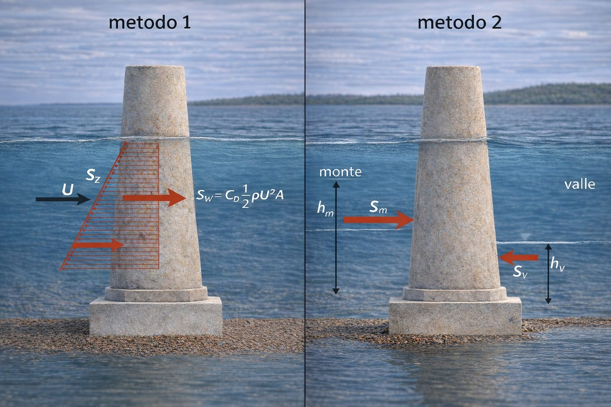

La spinta idraulica sulle Pile da Ponte
Impostazione tecnica
La forma geometrica delle pile può essere la più varia possibile. Spesso è condizionata da ragioni estetiche; più frequentemente però la scelta è guidata dalla razionalizzazione del profilo in funzione di diversi fattori quali:
- L'ostacolo sovrappassato;
- La larghezza dell'impalcato;
- Le modalità di vincolo dell'impalcato;
- Gli ingombri degli elementi di interconnessione con l'impalcato;
- L'altezza delle pile e le modalità costruttive.

Formule di riferimento
\[q_w = \frac{F}A = C_D \frac{1}2 \rho U^2\]
\[A = p\cdot h\]
\[S = S_z + S_w = \frac{1}2 \gamma z^2 A + C_D \frac{1}2 \rho U^2 A\]
\[S = S_m - S_v\]
\[S = [\gamma_w \cdot Y_{Gm} \cdot A + \beta \cdot \rho \cdot \frac{Q^2}A] - [\gamma_w \cdot Y_{Gv} \cdot A + \beta \cdot \rho \cdot \frac{Q^2}A]\]
Le forme delle pile idraulicamente più efficienti (che producono un rialzo idraulico meno accentuato) sono quelle a rostri arrotondati e semicircolari, che accompagnano meglio la corrente. Il rapporto lunghezza-larghezza idraulicamente ottimale per una pila varia con la velocità, essendo compreso tra 4 e 7.

é sempre bene porre alcuni accorgimenti quando la pila è ubicata in acqua corrente, ad esempio un eventuale rivestimento di protezione.
La spinta idrodinamica per unità di superficie , si calcola tramite la seguente relazione:
Dove:
- Cd è il coefficiente di Drag che dipende dalla forma della sezione;
- rho è la densità dell'acqua (1000 kg/mq);
- U è la velocità media della corrente;
Tale forza per unità di superficie, se vogliamo ottenere la forza che impatta sulla pila, deve essere moltiplicata per la superificie (A) che impatta la corrente, ovvero la proiezione della superfice dell'ostacolo sulla perpendicolare alla corrente.
Dove:
- p è il perimetro della pila che impatta il flusso della corrente;
- h è il tirante idraulico.
Considerata la geometria del problema, la sola spinta idrodinamica spesso sottostima la reale spinta a cui è sottoposta l'oggetto. Per tenere conto della reale spinta da sostenere potrebbe essere il contributo della spinta idrostatica + l'incremento di spinta idrodinamica.

Se volessimo essere più precisi, qualora questa forza risultasse eccessiva.
Il rigurgito indotto dalla presenza della pila determina, ad opera della corrente, una spinta idrodinamica che si esercita sulla pila e sulla sua fondazione. Tale spinta è la somma della componente idrostatica ed idrodinamica della corrente.
Dove:
- gamma_w è il peso specifico dell'acqua pari a 10 kN/m3
- Beta è il coefficiente di ragguaglio della quantità di moto che dipende dalla effettiva distribuzione di velocità ma in generale è approssimabile ad 1.
- h è l'altezza del pelo libero calcolata rispetto al fondo alveo.
- A è l'area della sezione dell'alveo.
- Yg è l'affondamento del baricentro dell'area A rispetto al pelo libero della sezione.

Pertanto il primo metodo dovrebbe essere molto cautelativo trascurando del tutto la contro spinta
